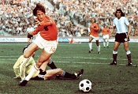

Johan Cruijff heeft geen introductie nodig. Zelf zei hij ooit eens dat de tijd dat hij iets moest meenemen naar een gesprek achter hem ligt. Hij bracht alleen zijn naam nog mee. De vraag stellen "Wie was Johan Cruijff?" lijkt dan ook overbodig. Ik vond het altijd prettig om naar de analyses te luisteren van hem. Door een kijkje in het hoofd van de legendarische nummer 14 was er altijd iets te leren over voetbal. Hij sprak zoals hij speelde. Hier en daar een versnelling, een vraag ontwijken alsof het een tackle was en diverse voltreffers die nu ook wel op tegeltjes verkrijgbaar zijn.
Ik zou een hele analyse kunnen maken en diverse pagina's schrijven over voorbeelden, anekdotes en andere zaken. Maar hier vraagt de les op het moment niet om dus voor nu zal ik dit achterwege laten. Wie weet dat ik in de toekomstige lessen een mooie website kan maken over de legendarische nummer 14.
| Je | Kun | ||
| Moet | Je | ||
| Schieten |  | Niet | |
| Anders | Scoren |